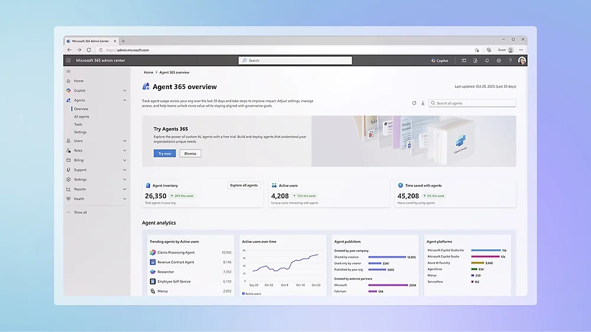

Microsoft Agent 365 vs. Microsoft 365 Agents: A Field Guide for IT and Architects
Microsoft Agent 365 vs. Microsoft 365 Agents is the field guide distinction for IT teams and architects: one term describes governed agent operations, while the other describes the agents users build and run inside Microsoft 365 experiences.
If youâve spent the last twelve months in the Microsoft AI ecosystem, youâve watched the same pattern repeat: every announcement reframes the same thing under a slightly different banner. Copilot. Copilot Studio. Microsoft Foundry. Microsoft Agent Framework. Declarative agents. Custom engine agents. And now, two terms that sound almost identical but mean very different things Microsoft 365 Agents and Microsoft Agent 365.
I keep seeing them used interchangeably, including in serious technical posts. They are not interchangeable. With Agent 365 hitting general availability on May 1, 2026, getting this distinction right is no longer a pedantry exercise itâs a procurement, governance, and architecture decision.
This post is the field guide to Microsoft 365 Agents I would have wanted before I started building.

The two terms, side by side
| Microsoft 365 Agents | Microsoft Agent 365 | |
|---|---|---|
| What it is | The agents themselves + the SDK to build them | The IT/security control plane that governs agents |
| Who itâs for | Developers, makers, line-of-business owners | IT admins, security teams, compliance leads |
| Examples | Declarative agents, custom engine agents, Copilot Studio agents, Foundry-built agents | Registry, Entra Agent ID, Agent Blueprints, Work IQ MCP governance |
| Licensing | Bundled with Microsoft 365 Copilot, Foundry consumption, Copilot Studio | Separate SKU: USD 15 / user / month, or bundled in Microsoft 365 E7 (Frontier Suite) |
| Status | GA across most components | GA since May 1, 2026 |
In one sentence: Microsoft 365 Agents are what you build. Microsoft Agent 365 is what you use to keep them safe at scale. Now letâs go layer by layer.
Microsoft 365 Agents â the agent layer
Strip away the branding and Microsoft 365 Agents is four ways to build an agent, all stacked on top of the same identity, grounding, and governance model:
- Declarative agents â manifest-described agents that run inside the Microsoft 365 Copilot host. No custom backend. You describe the persona, grounding sources (SharePoint, OneDrive, Graph, web), connector tools, and conversational starters. Microsoft executes them inside Copilot Chat in Teams, Word, Outlook, and Microsoft365.com.
- Agent Builder â the no-code authoring path inside Microsoft Copilot. Same execution model as declarative agents, with templates and a visual setup. Excellent for line-of-business owners who would otherwise build the same flow in Power Apps.
- Copilot Studio agents â the low-code path. Topic-driven authoring, multi-channel publishing, model picker, MCP support. The natural home for citizen-developer-led automation that needs more control than a declarative manifest gives you.
- Custom engine agents â full-control agents you build with the Microsoft 365 Agents SDK (documented on Microsoft Learn, the successor to the Bot Framework, AI-stack-agnostic, .NET GA / JS / Python). You bring your own model (Foundry, Azure OpenAI, Anthropic via Foundry, open-weights), your own memory store, your own tool surface. Microsoft handles distribution, identity, and channel plumbing across Teams, M365 Copilot, web, and embedded surfaces.
Pro-code teams typically pair the M365 Agents SDK with the Microsoft Agent Framework (v1.0 GA April 2026 for .NET and Python) for orchestration, multi-agent patterns, and skills authoring. For how these Microsoft 365 Agents fit the wider stack, see my field guide to the Microsoft Build 2026 agentic stack.
The choice between these is not a feature checkbox â itâs an architectural decision:
- Default to declarative agents or Agent Builder for flows that are mostly grounding, summarisation, or Q&A over Microsoft 365 content. Cheaper, governed, and you donât reinvent identity.
- Reach for Copilot Studio when business users need to own the lifecycle but you still want IT guardrails.
- Reach for custom engine agents when you need orchestrated tool use, deterministic state, custom memory, non-Microsoft models, or strict latency control. Thatâs where Foundryâs evaluation, monitoring, and observability really start to pay back.
Microsoft Agent 365 â the control plane
Now the part that actually changes how IT does its job. Microsoft Agent 365 is not a place to build agents. It is the centralised layer that lets IT, security, and compliance teams observe, govern, and secure every agent in the tenant â regardless of whether it was built in Copilot Studio, Foundry, the Microsoft Agent Framework, the OpenAI Agents SDK, Claude Code SDK, LangChain, or registered from a third-party platform.
It aligns to four admin domains and five core capabilities, and itâs the same pattern Microsoft already uses for users, devices, and apps â just applied to agents.
The four admin surfaces
- Microsoft 365 admin center â the central hub. Inventory, blueprint approval, lifecycle, agent analytics.
- Microsoft Entra â identity and access. Entra Agent ID gives every agent its own first-class identity, so Conditional Access, risk-based access, and least-privilege scoping apply natively.
- Microsoft Purview â data protection. Sensitivity labels, DLP, insider risk, audit. Agents that ground in SharePoint or OneDrive inherit existing labels; custom-engine agents that reach external data need explicit DLP wiring.
- Microsoft Defender â threat protection. Posture management, anomaly detection, advanced hunting over agent tool-calls.
The five capabilities
- Registry â a unified inventory across Microsoft-built, partner-built (Genspark, Zensai, Egnyte, Zendesk, Kasisto, Kore, n8n at launch), and self-registered agents. Registry sync with AWS Bedrock and Google Cloud is in public preview, so multicloud estates are visible in one place.
- Access control â every agent gets an Entra-backed identity. Admins set guardrails on who can create, onboard, and manage agents.
- Visualization â the Agent Map: how agents connect to other agents, MCP servers, identities, and cloud resources.
- Interoperability â governed access to Microsoft 365 workloads through Work IQ MCP servers (Outlook, Word, Teams, SharePoint, Dataverse, and more). Admins allow or block servers from the M365 admin center; Defender Advanced Hunting traces every tool call.
- Security â runtime policy enforcement, agent-to-agent segmentation, and the Shadow AI discovery surface for unmanaged agents.
Agent Blueprints â the governance primitive
The piece that ties this together is the Entra agent blueprint: an IT-approved, pre-configured definition of an agent type. The blueprint specifies the agentâs capabilities, required Work IQ tools, security and compliance constraints, audit requirements, and linked policy templates (DLP, external access, logging).
Once activated in a tenant, users request agent instances from blueprints in the M365 admin center. Every instance inherits the blueprintâs posture by default. This is the App Catalog pattern from the SCCM/Intune era applied to agents â and itâs the single most important Agent 365 concept to internalise before your users start uploading agents from random GitHub repos.
The Agent 365 SDK and CLI
Developers donât have to migrate frameworks to participate. The Agent 365 SDK (NuGet, PyPI â packages prefixed Microsoft.Agents.A365 / microsoft-agents-a365) extends any agent â built on the M365 Agents SDK, Microsoft Agent Framework, OpenAI Agents SDK, LangChain, Claude Code SDK â with enterprise-grade observability (OpenTelemetry), notifications (Teams, Outlook, Word comments), and governed MCP access.
The Agent 365 CLI automates the lifecycle: blueprint creation, identity wiring, MCP integration, Azure deployment, publishing to the M365 admin center, and clean-up.
Where this lands for endpoint admins
If your job is keeping a tenant clean â and especially if you spend your days in Intune and Defender â governing Microsoft 365 Agents through Agent 365 adds three new admin surfaces you didnât have a year ago:
1. Shadow AI discovery via Defender + Intune
Microsoft has flagged that agent context mapping, policy-based controls, and runtime blocking will hit public preview in June 2026 through Intune and Defender. Customers in the Frontier program already see local agents (the OpenClaw surface, in Microsoftâs terminology) in the new Shadow AI page in the M365 admin center and in Intune. You can apply Intune policies to detect managed devices running unmanaged agents and block the common execution paths.
For Intune admins, this is the natural extension of the work you already do for unmanaged software. The pattern is the same; the inventory target is new.
2. Conditional Access for agents, not just users
Every agent action runs as an Entra-backed identity. Custom engine agents authenticate as application identities (or as the user via on-behalf-of flows). Declarative agents inherit user permissions when they call Graph through connectors. Either way, your existing Conditional Access policies â device compliance, location, MFA, risk â apply automatically.
This is the single most under-appreciated feature. Well-architected agents are governed exactly like the users that sponsor them.
3. Windows 365 for Agents
In parallel with Agent 365 GA, Microsoft launched Windows 365 for Agents in public preview (US only, for now): a secured, managed Cloud PC environment specifically scoped to agent workloads. Agent 365 governs what an agent is allowed to do; Windows 365 for Agents governs where it does the work. Worth piloting if your scenarios involve agents driving desktop applications.
My architecture rules of thumb
After shipping a handful of these into production tenants, here are the rules I now apply by default:
- Default to declarative agents or Copilot Studio for grounding-heavy flows. Reach for the M365 Agents SDK only when the use case justifies the operational weight.
- Define blueprints before users define agents. The default blueprint surface in your tenant determines whether Agent 365 actually governs anything, or just observes it.
- Treat agent identities as service principals. Scope them tightly via Graph application permissions; never use a global adminâs credentials. Audit them like any other service principal.
- Never ship without an eval suite. Without one you cannot tell whether your next prompt edit broke the previous five workflows. Run evals in CI, gate deployment behind a quality threshold.
- Label your tools. Every tool an agent can call gets a docstring, a schema, and a policy stating when it is allowed. The agentâs prompt is not where that policy belongs.
What to do this quarter
If you are an admin or IT architect and you have not yet operationalised Microsoft 365 Agents through Microsoft Agent 365, four steps will pay for themselves:
- Stand up Agent 365 in the M365 admin center. Either via the standalone SKU (USD 15 / user / month) or as part of Microsoft 365 E7 (Frontier Suite). Activate the registry; default to admin approval for new agent installations.
- Inventory shadow AI. Defender for Cloud Apps already classifies AI tools; combine with the Agent 365 registry to get a unified picture across managed, partner, and self-registered agents. Measure before you block.
- Pilot one declarative agent. Pick an internal workflow thatâs currently a wiki page or a Teams FAQ. Declarative + grounding is your minimum viable AI feature.
- Stand up Foundry plus the M365 Agents SDK for the next workflow. Evaluation framework, monitoring, prompt versioning, deployment slots, full identity wiring through Agent 365. This is the platform youâll wish you had when your first agent goes wrong at 3 a.m.
Closing thoughts
Microsoft 365 Agents and Microsoft Agent 365 are two halves of the same story, but they live in different budgets and answer to different teams. Microsoft 365 Agents is what your developers and makers build with. Microsoft Agent 365 is what your IT and security teams use to keep what got built from becoming a problem.
The hard part for IT teams isnât the technology itself â itâs recognising that agents are now part of your tenantâs identity surface, attack surface, and DLP surface. Treat them with the same rigour you treat application registrations and Conditional Access today, and you will be fine. Treat them as a marketing curiosity, and you will be cleaning up shadow AI for the rest of the year.
The vocabulary matters because the licensing matters because the governance matters. Get the words right first; the rest follows.